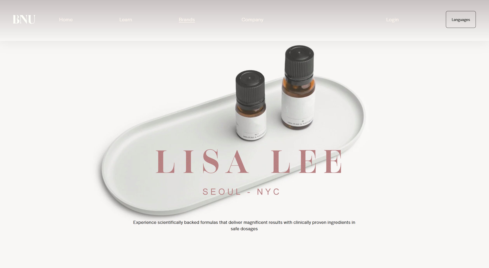
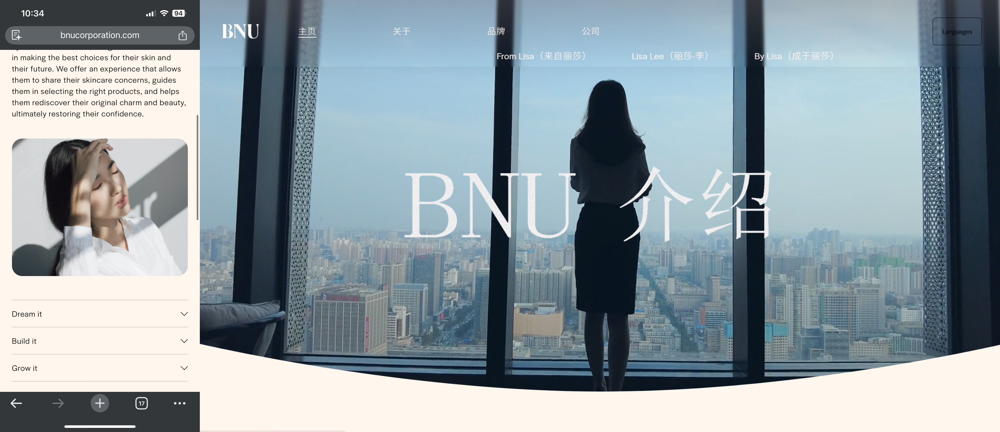

BNU Corporation Internship
Project Type: UX/UI · Responsive Web · Multilingual Experience · Brand-aligned Visual
During my first UX/UI internship at BNU Corporation, I redesigned the company's Squarespace website to better reflect its brand philosophy — “Be Next to You, Be Nice to You” — while improving navigation, mobile usability, and multilingual support for female customers.
Role: UX/UI & Visual Design Intern
Timeline: 3 Months · Summer 2024
Tools: Squarespace, Adobe Illustrator / Photoshop / After Effects, Custom Code Injection, Canva
Link to BNU official website: https://www.bnucorporation.com/
Background & Challenges
BNU is a women-focused skincare and hormonal health brand founded on the philosophy “Be Next to You, Be Nice to You.”
When I joined, the website faced several UX challenges:
• Fragmented information architecture
• Poor mobile usability
• Overcrowded multilingual navigation under CMS constraints
• Limited use of interaction and motion to express brand values
My Contributions
• Restructured IA and page layouts
• Redesigned responsive layouts for mobile usability
• Developed a multilingual UX strategy within Squarespace constraints
• Localized and redesigned the Chinese version of the site
• Implemented custom hover interactions using front-end code
• Designed brand-aligned landing page motion graphics
Design Highlights



Key Takeaways
This first internship taught me how to design UX under real-world constraints, where CMS limitations, brand values, and user needs must be balanced through clear communication and iteration.
I learned the importance of communicating early, exploring multiple design options, and preserving previous versions rather than overwriting them, especially when collaborating with stakeholders and working within existing systems.